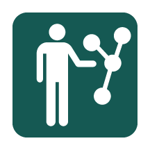

RESEARCH METHODS
Interviews & Ethnography
People's stories, perspectives, experiences, and vocabulary are critical for understanding an audience. Identify mentions of tasks, metaphors, motivations, practices, feelings, and behaviors. Look for patterns and phrases that identify how your audience interprets, talks about, or frames different concepts.
RESEARCH METHODS
Message Testing
Different forms of messages appeal to different groups of people. Message testing can help communicators understand which forms of messages, message frames, and message channels work for different audiences. It can range from asking a few people for feedback to testing messages directly with audiences into the thousands.
RESEARCH METHODS
Survey Research
Survey research can generate or validate hypotheses about people's attitudes, values, beliefs, practices, culture, behaviors, and capacity for change. Effective surveys go beyond opinion polling to understand people's core motivations, cultural assumptions, and their physical, social, and psychological situations.
RESEARCH METHODS

Touchpoints & Network Mapping
Network analysis seeks to understand the structure and relationships between individuals, artifacts, and groups and the touchpoints that connect them. It describes the context and meaning of an individual's actions, the importance and flow of resources, ideas, and motivations, and the values systems and cultural trends within different groups.